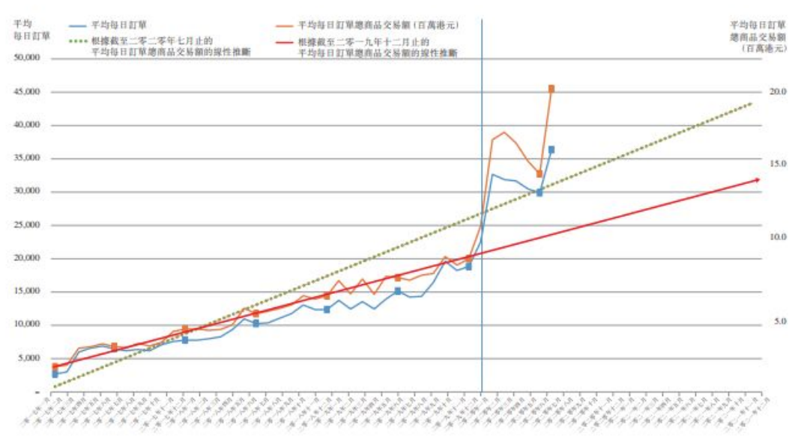

疫下一年
疫情下的生活
疫情下的生活
在2020這一年，受新冠肺炎影響下，香港人基本上一整天都是對著電子屏幕，工作、entertainment 。有人 或會想，如果有網絡，在疫情之下的上班一族是否都不需要上班呢？
突然收到一則手機的新聞推送通知， 今季的失業率又創新高，錄得6.4% 。唉！我知道香港的失業率一季比一季高。老實說，有時我也會很擔 心自己會不會成為下一個失業人士。雖然現在公司申請了保就業，但政府明言不會推出第三期的保就業 計劃了。
就業不足的人數
Section Tuesday
雖然很擔心自己的飯碗，但飯總是要吃的。來到星期三，今晚我約了舊同學見面，隨著限聚令放寛，最近都 好像多了人外出進膳，不過，為了減低感染風險，我們還是選擇買外賣回家吃。我們原打算買一家中式餐廳 的外賣，但未走到餐廳門口，就已經見到長長的人龍，竟然這麼受歡迎。最後，我們轉到另一間新開張的快 餐店，味道還不錯。
疫情期間，巿民減少外出進食，加上曾經實行多日的 「禁堂食令」，不少餐廳結業，但是，根據「Openrice香 港開飯喇」的數據，同期開業的餐廳反比結業的多， 平均每一家餐廳結業，就有1.3家餐廳開業，今年9月 更有逾430家餐廳開業，同月亦有約250家餐廳結 業。
全港餐廳開業及結業
至於不同食肆的營業情況，疫情間中式餐廳的收入 跌幅最大，本港的疫情於1月開始擴散，中式餐廳的2 月總收入為19億，相比1月份逾41億下跌一半。另外 ，疫情期間酒吧長時間關閉，酒吧的收入同樣大跌， 回顧疫情前，2019年下旬的平均收入有約1億，7、8 月份的酒吧收入少逾7成，8月份有約1千萬收入。隨 著疫情穏定，9月份各食肆的收入回升。
食肆收入
見完朋友的第二天仍要繼續上班，甚麼時候才到星期五呀！我在公司打字打到有點悶，決定上網看一看 有甚麼新的網購產品。唉！我很想買唇膏呢，我半年都沒有買了，但現在每天上班外出都要配戴口罩，好 像不是買唇膏的時候，化妝品我最近也買少了許多。
在疫情期間，大家都減少了外出。許多網上店舖趁此情況不時有減價優惠，增加了市民在家消費的 欲望。香港網上購物平台HKTVMall公佈.....
PWC
HKTVMall HKTVMall HKTVMall
Hktv mall’s goods categories and related sales
HKTVMall
受限聚令和禁堂食的影響，香港人在今年多了時間待在家中的時間。根據今年Netflix的第二季業績報告， 全球訂閱人數對比去年同期增加1200萬，多超過一倍，而付費會員則高達 1.93 億名，收入亦比去年同期 增長 24.9％。 這一年，我很難有機會跟一大班朋友去看電影，更不要說可以去看演唱會了。我只能透過電 腦看線上電影和網上音樂演唱會。唯有自己一個在家苦中作樂了。
根據調查網站FlixPatrol的統計，直至11月15日 ，2020年香港區最熱門的十套NETFLIX 電視節目頭 六位是韓劇，頭三位分別是《雖然是精神病但沒關 係》 和《The King: 永遠的君主》 《青春紀錄》。另外， 在電影方面，香港區最熱門的十套戲劇節目大多為 歐美電影，頭三位分別是《禁錮之慾》 和《驚天營救》 《一級玩家》。
netflix
另外，各大音樂平台都推出大大小小的網上音樂會，為人熟知的歌神許冠傑亦在各平台上直播籌款音樂會， 當中的所有收益將不扣除成本，全數平均捐給相關人士，為香港人打氣。台灣的著名樂隊五月天在Youtube 舉 行《突然好想見到你》網上演唱會，錄得超過七百萬人次收看。另外，台灣藝人黃鴻升在九月猝逝，引起社會 震撼和各界人士的不捨，及後一眾好友在網上為他舉行音樂會，進行悼念。
timeline
辛苦工作了一週，是時候放鬆一下，現在因為疫情關係無法出遊，讓我邀約我的好朋友，一起去找地方 Staycation，到底去酒店還是租用Airbnb的房間比較好呢？
因為疫情關係，本港1月至9月份錄得約三百萬訪港 旅客，比去年同期下跌逾92%，數據顯示今年酒店的 入住率一度由1月的59%下降至2月的29%，其後開 始回升。除酒店外，亦有巿民或旅客選擇租用民宿， 根據Airbnb的數據，截至今年10月25日，2020年的總 租用次數下跌至約9千次，比2019年少逾7成。
tourists
正當我準備按下確認租用的按鈕時，啊！剛剛又新增一宗確認個案，看看新聞，原來都有不少在Staycation 期間感染新冠肺炎的個案，到底我還要不要繼續去staycation呢？
China Secret及港威酒店群組、梅窩Staycation等確 診個案均涉及Staycation，政府於11月16日起將包括 酒店在內的旅館列入599F章規管，酒店每個房間人 數上限為4人。 回顧疫情爆發以來，多個大型群組涉及餐廳進食、聚 餐，私人聚會等，其中，疫情初期的酒吧及樂隊群組 有103人確診，其後九龍東多間餐廳出現多人確診。
Infected Groups
早前同跟朋友去了幾晚staycation，沒有想過這麼 就不能再去了。 不可以唱K 不可以去PARTY ROOM AND BAR, 好像沒有甚麼娛樂我可以去 做了。
政府收緊了staycation policy find some data after governent tightened the law
staycation
昨天都是決定不去Staycation了，星期日的中午，剛走出門口，就看見一群身穿黑色上衣的人走過，高舉標 語，叫喊口號。
自2019年反修例運動起，香港不時發生遊行及示威活 動，去年民陣曾表示有近200萬人參與6月16日的遊行 ，警方則指33.8萬人參加。2020年受到疫情的影響， 減少了大型遊行的次數，元旦遊行時民陣表示有103 萬人參與，警方則指有6萬人，至於其後的遊行大多未 有獲批不反對通知書。「港區國安法」亦於今年6月30 日由全國人大常委會表決及通過，截至9月下旬，最少 28人因國安法被捕。
圖顯示在疫情下各大型遊行活動當日的被捕人數：
demostration
由2019年的反修例風波，到2020年的新冠肺炎，香港人的生活和心情都不好過。長期留家抗疫，我都感到不 少壓力。
疫情下不同群體的巿民都感到不同程度的壓力，青 協的調查指出2020年學生開學的壓力指數比往年的 高，此外，不同組織亦進行各類調查，均表示疫情下 長者的情緒受到負面影響。香港大學醫學院精神醫 學系團隊的調查顯示，逾7成人呈現中至高度抑鬱症 狀，而超過4成人有中至高度的創傷後壓力症狀。
圖顯示學生的開學壓力指數比2018年以往的高：
Pressure
不同群體的精神健康調查結果 (?)

reactions
dummy dummy dummy dummy
收尾整個問題? e.g. 你在疫情下的心情如何? 之類?
答完有個初步結果
chart 01
chart 2
chart 3